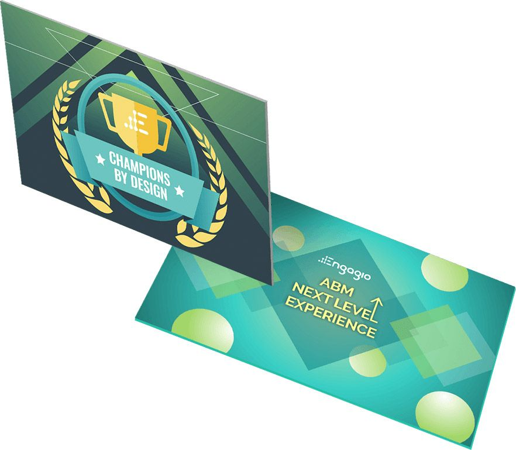
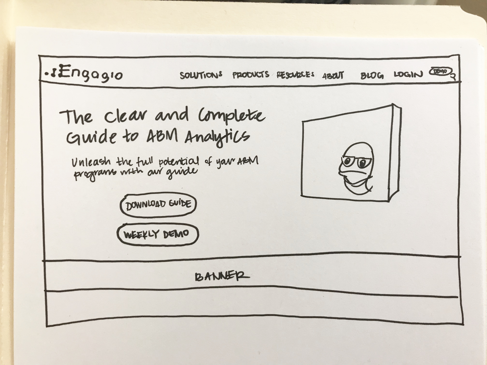
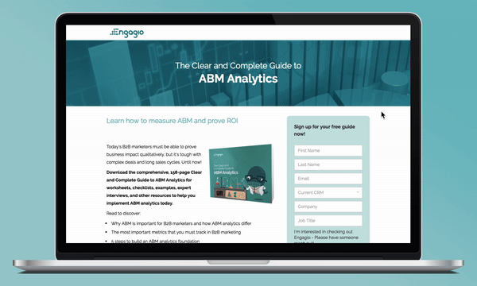
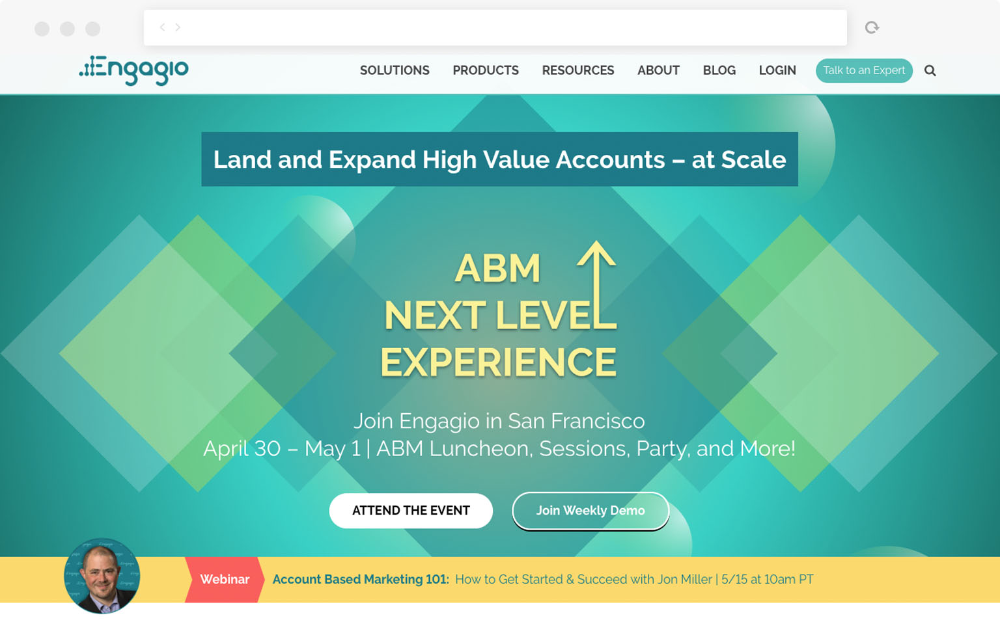
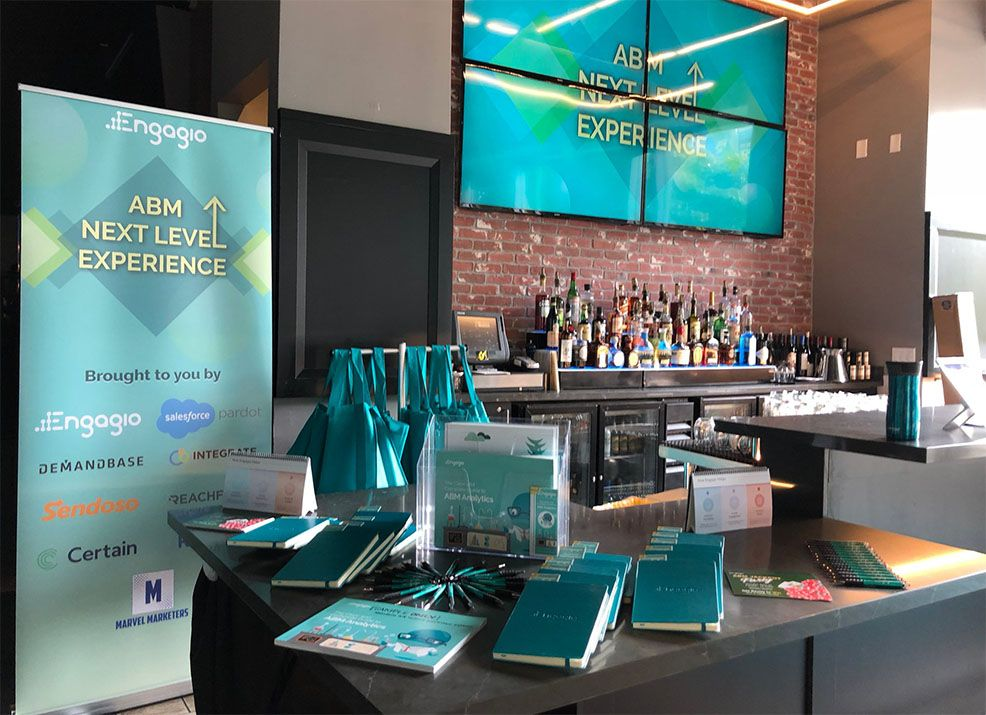

Engagio

Engagio is a fast moving startup in the account based marketing space. The B2B company creates tools and products for marketers so there is a lot of campaigning involved on our end. Working in Marketing, I supported all campaigns with visual assets for both web and print, including upkeep of our corporate website and deploying landing pages. My other role as the brand guardian was to maintain design consistency and help Engagio move away from their old looks towards a more modern aesthetic.
There were many inconsistencies across the designs used for each department, so I came onboard as a visual/UX designer to promote a stronger identity as a marketing software company. I had to enforce the brand guide within my team but I was also responsible for coming up with new ways to spruce up our campaign materials and landing pages.
As the go-to person for all of marketing designs, my responsibilities included:
Due to our rapid nurture programs and product releases, I was constantly involved with the creation of graphics to promote our campaigns through all channels of acquisition. I've contributed a design system which includes templates and assets that are reusable for all promotions.
Before my arrival, the company was using a lot of nautical stock photos, turquoise overlays, and a whale character by the name of Gio. While Gio was regarded as a lovable mascot within our company, we felt that it was important to limit him on our consumer-facing items because we wanted to maintain a serious identity as an ABM company.
For our conferences and seminars, we provide follow up collateral for current and prospective customers. I created custom artwork for content marketing which include digital guides, infographics, and one pagers. The design process was highly iterative due to the constant changing of copy by the team. The difficulty with this was trying to ensure that the layout of the designs would accommodate the copy in terms of characters and messaging.
During periods of promotional campaigns, I would create accompanying graphics and homepage highlights, and build out landing pages to be implemented into Marketo. One of the biggest things we promoted was the Clear and Complete Guide to ABM Analytics, written by our CEO Jon Miller.

Using Sketch and InVision, I shared the designs with the marketing team. Usually this design review happens with the stakeholders, and oftentimes result in re-iterating the design. Once the designs were approved, I implemented in via Wordpress's built-in HTML editor.
The next step was to introduce a new template for our landing pages. The CEO and marketing team felt that the current landing pages were drawl and wanted to spruce things up. I introduced new concepts into the layout like customer testimonies and consistent hero banners. I used Marketo to build these pages which was limiting at times due to the fact that we have templates. My solution to that was creating custom graphics and bringing that into our Marketo templates.

Every year, Engagio hosts their own marketing event around the same time as Marketo Summit. My role during this time was to design for the entire campaign and event, including all demand gen assets and conference collateral. I worked closely with the Field Events Marketer and the Product Marketer to forge the identity and messaging involved..

ABM Next Level Experience was held at Jillian's in San Francisco.
During my time at Engagio, I was able to leave an imprint on the company. The Marketing Team has adopted some of my design standards and guidelines. We were able to move away from the overusage of nautical imagery but still kept our playful mascot Gio at bay, when appropriate.
Besides leaving behind something for the company, I was also able to take away from working with the team there. I had to figure out crafty ways to communicate to a less technical crowd, while working within sporadic deadlines. In the end, the skills acquired here set me up to work in my subsequent positions in Marketing.